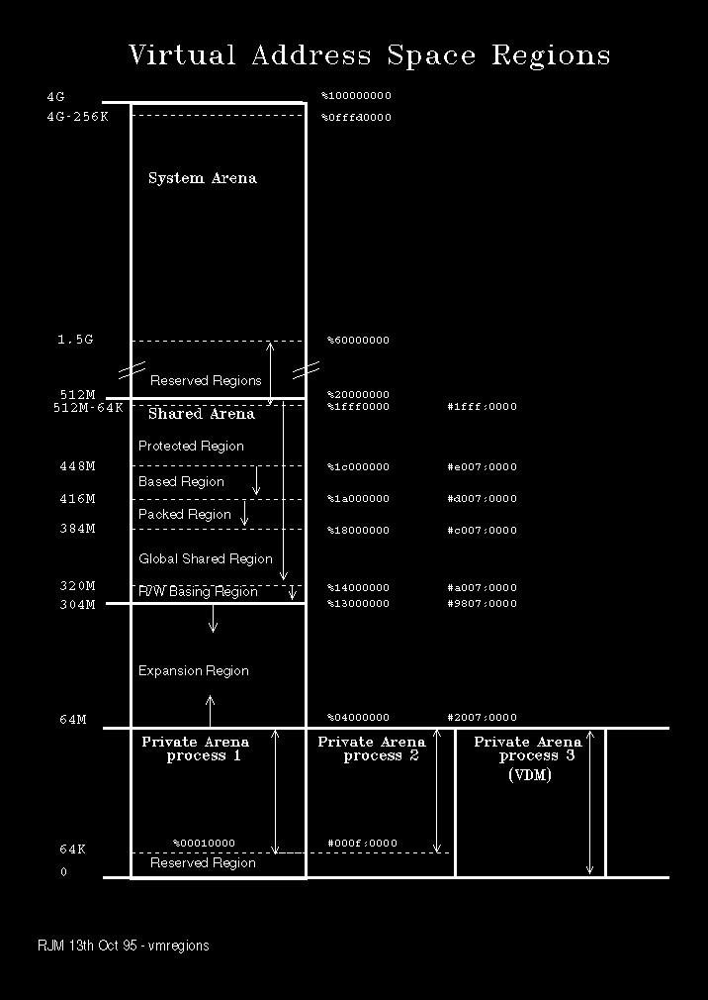
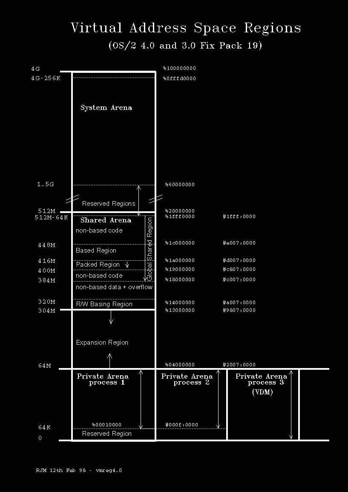

OS/2 partitions the 4G virtual address space into three types of arena:
System
Shared
Private
The system arena is common to all processes. It starts at the 512M boundary and occupies the address space up to 4G. Only system code (and device drivers) can access data in the system arena directly. User code must use APIs invoked by the call gate mechanism to access system arena code and data. Nearly all system arena data is global: that is, managed by a common set of page tables, whatever the current thread/process context. The exception to this is in the memory area mapped by selector 30. Page table entries are adjusted as part of context switching so that selector 30 addresses the current PTDA, TCB and TSD.
The shared arena address range is common to all processes, but it comprises data that is both global and instance. Instance data occurs where a separate set of page table entries are used per context to map the same linear address range.
Instance data is used when the same type of data needs to be allocated as multiple private copies to each process. An example of this would be a logical screen buffer. The shared arena starts initially at the 304M boundary and ends at 512M. User programs may access the shared arena. DLL code and data is located in the shared arena. DLL code segments are always global, but DLL data segments may be instance or global and are usually a mixture of both.
The shared arena is further subdivided into a number of regions:
Region
32-bit DLLs become protected through use of the protect option at compile time.
16-bit DLLs may also use the protected region, if explicitly coded to do so and listed in CONFIG.SYS using:
PROTECT16=dll1,dll2,....
The Protected Region may be subsumed into the Based Region (see below) by coding in CONFIG.SYS the NOPROTECT option on the MEMMAN statement.
The default is MEMMAN=PROTECT
Note:
From OS/2 Warp V3.0 fix pack 19 and OS/2 Warp V4.0, the Protected Regon has been absorbed into the Based Region. The system bahaves as if MEMMAN=NOPROTECT is in effect and MEMMAN=PROTECT has no effect. Based
The purpose of the Based Region is to improve performance of module loading, by avoiding the need for the System Loader to do fix-up processing.
Note:
Under OS/2 2.x, MEMMAN=NOPROTECT would cause the Based and Packed Regions to move up 64M bytes - effectively giving another 64M bytes for general purpose use in the Shared Arena.
Potentially, tiny DLL code segments can deplete physical storage very rapidly if not packed. However, when packing is used there is no general algorithm that will convert 16-bit addresses into 32-bit addresses within the Packed Region. The system has to scan the LDT, over the Packed Region, to make this conversion.
Packing may be disabled by specifying the NOPACK option of the MEMMAN statement in CONFIG.SYS. The default is PACK. When packing is disabled up to 32M bytes is made available to the Global Shared Region.
Notes:
Under OS/2 2.x only MEMMAN=NOPACK would tend to reduce the Swapper Size where a great many 16-bit code segments are in use. This is because code segments outside the Packed Region are normally discardable (they are not swapped). Within the packed region they are swappable since a 4K page may contain code from a number of different modules.
Under OS/2 2.x MEMMAN=NOPACK would provide up to 32M bytes extra virtual address space for general purpose use in the Shared Arena.
Packing does not affect the availability of LDT selectors for allocations in the Packed Region, just the base linear address boundaries on which they are deployed.
Packing should not be confused with either the LINK386 PACK option or the PACK.EXE utility.
From OS/2 Warp V3.0 fix pack 19 and OS/2 Warp V4.0 the packed region has been reduced to 16Mb.
Notes:
The Global Shared Region is not configurable.
The Global Shared Region is only implemented in OS/2 WARP version 3.
Under OS/2 2.x Read/Write segments would be allocated in the Based Region.
Notes:
The Read/Write Basing Region is not defined in OS/2 versions prior to version 3.
Based DLLs under OS/2 2.x, by preference, have their segments loaded sequentially starting with segment 1 at the base address. With the implementation of the Global Shared Region only Read-Only segments can be loaded sequentially from the base address.
The Shared Arena will not contract to an address higher than the minimum Read/Write Basing address.
Note:
The expansion region for OS/2 2.x is from the lower boundary of the Packed Region, if present. If not, then from the lower boundary of the Protected Region, if present. If both the Protected and Packed Regions are removed (using MEMMAN=NOPACK,NOPROTECT) then expansion occurs from the top of the Shared Arena.
Each private arena occupies the lowest range of virtual address space from 0 - 64M bytes expanding up to a maximum of 304M bytes, the minimum Read/Write Basing address. None of the Private Arenas will be allowed to expand beyond the lowest allocation in the Shared Arena, that is Private and Shared Arenas may not overlap.
In general each process uses a separate set of page table entries to map each page of its private arena. Thus the data in the private arena is private to each process. Code (.EXE files) however is treated differently. Since code is read only an economy is made whenever more than one process runs the same .EXE. Where this happens the same page table entries are used among the processes sharing the common .EXE file. User programs may only access the private arena of the process they are running in (a special exception to this is possible through the DosDebug API by defining memory aliases).
Virtual Memory Arenas and Regions may be presented pictorially as in the following diagram.
Note:
Some regions of the 4G address space are reserved. This is done for a variety of reasons which include:
H/W and BIOS restrictions
Enforced segregation between Arenas
Guaranteed reserved address ranges.
